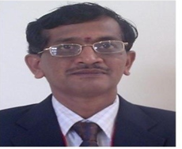

The Department of Civil Engineering was established in the year 2009 offering a four-year
undergraduate course leading to Bachelor’s degree in Civil engineering affiliated to Visveswaraya
Technological University, Belgaum with an intake of 60 students. The department also offers
Master’s programme in Construction Technology since 2013, affiliated to the VTU, with an intake of
18 students. The department has been recognized as a VTU-research centre in the year 2014, with
five research scholars currently pursuing their Ph.D programmes. The department has carved its
niche in the areas of academics, research, consultancy, collaborative projects, and publications.
DYNAMIC FACULTY
The Department has well qualified and experienced faculties and competent enough to undertake
teaching, research and consultancy services. The faculties are specialized in such diverse fields of
Civil Engineering like Structures, Geo-technical, Environmental, Transportation, Fluid Mechanics and
Remote sensing Engineering. All the faculty members have highest commitment to achieve the
excellence in teaching and to have better interaction with the students the faculty members are
involved in students counselling through mentoring for their personal and academic requirements.
VIBRANT LEARNING EXPERIENCES
The department has been actively involved in conducting conferences, workshops, FDP’s, Site Visits,
Project tours and several students related programs to provide a platform for sharing and spreading
the latest developments in the field of Civil Engineering. A two-week long survey camp is also
conducted to enable the students obtain extensive hands-on experience in the use of land surveying
instruments and in the essentials of survey practice. Measurements of distances and angles,
calculation and correction of errors are introduced. Concepts of higher order surveys and Global
Positioning Systems are reviewed and illustrated. Forum activities such as model making
competitions are held annually. Guest lecturers are arranged regularly by inviting experts from
Industries as well as academics. A 10 day sufficient training for 3 rd Year students is conducted by
M/S MEDINI on Auto CAD and REVIT architecture.
ADVANCED INFRASTRUCTURE
The Department has fully fledged laboratories with latest Machines, Instruments and Software
which supports the curriculum.
The laboratories include:
1. Basic Material Testing Laboratory.
2. Applied Engineering and Geology Laboratory.
3. Surveying Laboratory.
4. Computer Aided Design Laboratory.
5. Geotechnical Engineering Laboratory.
6. Concrete and Highway Materials Laboratory.
7. Environmental Engineering Laboratory.
8. Fluid Mechanics Laboratory.
Department has obtained VGST Funds and set up Loading Frame (capacity-200T) to test Concrete
Slabs and Beams of for Under Graduate, Post Graduate and Research students.
Message from HOD’S Desk

Dr. Nagaraj Sitaram ME
Ph.D
Professor & Head of
Civil Engineering Department
Welcome to the Department of Civil Engineering at EPCET. The Department of Civil Engineering at East Point College of Engineering and Technology, Bengaluru has been in existence from the inception of the institution and has grown into a fully-fledged department. It is currently offering the Bachelor’s of Engineering program, and one post graduate program in Construction Technology and Management. The department is recognized as research centre by VTU since 2006.
The Department of Civil Engineering with its multifaceted faculty maintains its strong links with the construction industry by engaging in consultancy activities. The students here are encouraged to engage extra-curricular and co-curricular activities which are essential for personality development, nurturing of team spirit and development of organizational skills. Department has well established laboratory and Experienced Staff. The department is actively engaged in development of sustainable materials through Undergraduate, Post-graduate and research scholars
Come join us now and build the Nation
DEPARTMENT VISION
Department of Civil Engineering aspire to become an outstanding Department by providing
quality education in Civil engineering, encompassing Ethical Environmental and Economic
aspects of the Society
DEPARTMENT MISSION
Make them Industry ready for employment in Government, private and research
institutions by imparting basic, applied and software training in Civil Engineering
domains
To motivate the students to pursue higher education, appear for competitive exams,
and other value- added programmes for their holistic development.
To establish state-of-the-art facilities and resources required to achieve excellence in
teaching-learning, and supplementary processes
To promote all-round development of the students through Industrial visits,
Internship, projects, leadership qualities, participation in Co-curricular and extra-
curricular activities.
To have regular interaction with the local government, Industries in the area for R &
D, and offer consultancy, material testing and technological interventions.
PROGRAMME SPECIFIC OUTCOMES(PSO)
PSO 1: The graduates will have the ability to prepare plan, analyse and able to design cost
effective solutions without overexploitation of natural resources.
PSO2: The graduates of civil engineering program will have the ability to take up
employment, entrepreneurship, higher studies, research and development for sustainable civil
society through ICT tools and life-long learning
PROGRAMME EDUCATIONAL OBJECTIVES(PEO)
PEO1: Practice civil engineering in construction industry, public sector undertaking or as an
entrepreneur for successful professional career
PEO2: Pursue higher education for professional development.
PEO3-Exhibit leadership qualities with demonstrable attributes in lifelong learning to
contribute to the societal needs
S.No
Name of the Faculty
Designation
Highest Qualification
Area of Specialisation
Profile
01
Dr. Nagaraj Sitaram
HOD &
Professor
Ph.D
Hydraulics and
Water Resources
02
Dr. V Harish
Associate Professor
Ph.D
Geology
03
Dr. Sudharshan Rao
Associate Professor
Ph.D
Geology
04
Dr. Srimannaryana H
Associate Professor
Ph.D
Geology
05
Dr. Ningappa A
Associate Professor
Ph.D
Geology
06
Prof. Sreedhar N
Associate Professor
M.Tech
Transportation Engineering and Management
07
Prof. Barnali Ghosh
Associate Professor
M.Tech
Soil Mechanics and Foundation Engg
08
Prof. Geena George
Associate Professor
Ph.D
Environmental Engineering
09
Prof. Kavya MPM
Assistant Professor
M.Tech
Structural Engineering
10
Prof. Narayana Rao Venkatesh
Assistant Professor
M.Tech
Structural Engineering
11
Prof. Preethi Annie Blessy
Assistant Professor
M.Tech
Structural Design
12
Prof. Santhosh R
Assistant Professor
M.Tech
Structural Engineering
13
Prof. Munikrishna D M
Assistant Professor
M.Tech
Structural Engineering
14
Prof. Shobha N V
Assistant Professor
M.Tech
Geoinformatics
15
Prof. Ranjitha M
Assistant Professor
M.Tech
Structural Engineering
16
Prof. Seema B
Assistant Professor
M.Tech
Structural Engineering
17
Prof. Ravindra B.N
Assistant Professor
M.Tech
Computer Aided Design of Structure
18
Prof. Sandhya Rani N
Assistant Professor
M.Tech
Structural Engineering
19
Prof. Chinchu Lakshmi Das
Assistant Professor
M.Tech
Transportation Engineering
20
Prof. Nikesh Jain
Assistant Professor
M.Tech
Construction Technology
21
Prof. Vinodkrishna M Savadi
Assistant Professor
M.Tech
Structural Engineering
22
Prof. Rajani V Akki
Assistant Professor
M.Tech
Construction Technology
23
Prof. Sharath Babu Khedagi
Assistant Professor
M.Tech
Infrastructure Construction and Management
24
Dr. Ashok Biradar
Professor
Ph.D
Civil engineering
DEPARTMENT OF CIVIL ENGINEERING
CURRICULUM
The curriculum of Civil Engineering courses is designed to develop student’s tendency for innovation,
leadership and an aptitude to solve social concerns ethically through sustainable practices. The
curriculum is based CBCS (Choice Based Credit System) to achieve 175 credits (UG) with due
weightage to extra-curricular, activities, minor projects and major projects. The academic gaps in the
curriculum is filled through industrial visits (IV), case studies, guest lectures and IILP programs
Placements at Department of Civil Engineering
Civil Engineering department maintains a fairly good placement record with nearly 70% to 80%
students finding a job through campus placement even before completion of the degree. Civil
Department offers complete placement assistance through wide variety of Programs. We have a
dedicated Training & Placement Team supported by team of core Technical Support Faculty.
Once student takes the admission, his / her credentials are registered in our Training &
Placement portal and all the job updates are sent through the same portal. We train our students
on basics of Engineering Design, Drawing Reading, various Design & Analysis Software used in
Mechanical / Civil / Architecture along with Soft Skills training. Mock interviews and tests are
conducted prior to final interviews of Students. We invite industrial experienced resources and
our Alumni to train our existing students so that they can clear the recruitment process. We train
our students as per company job requirements
Department club of civil has been actively organizing workshops, seminars, technical talks
by experts to promote industry institute interactions. Apart from these, many conferences,
and other technical activities are also organized in the department
Activities Conducted from June 2020- Till Date
S.No
Name of the Activity
Date of Conduction
Resource
Person/Speaker
Poster/Flyer/Brochure
1
Webiner on
“Advanced Waste
water treatment
technologies”
13th July
2020.
Dr Basvaraju Manu,
Associate Professor,
NITK, Surathkal
2
Webiner on “Nano
Materials and
Applications”
18th July,
2020
Dr Nagaraj Sitaram,
Prof and HOD,
EPCET, Bangalore
3
Webiner on “Career
Perspectives in
construction
Industry”
21st July,
2020
Dr T Senthil Vadivel,
Prof and
HOD,Adamas
University, Kolkata.
4
Technical Talk
on“Impact Of
Climate Change on
civil Engg Projects”
30th
December,
2020 -
25th Nov
2020
Mr Anand Kulkarni
Director (KPMG)
5
Two Days National
Conference on “Cost
Effective Civil
Engineering
Practices for Rural &
Urban Infrastructure
Development
"CECPRUID -2021
8th Jan – 9th
Jan, 2021
Dr. M R Pranesh
(IIT Madras),
Er. Prabhakar D
Hamigi,
RDPR, Govt. of
Karnataka
Mr Anand Kulkarni,
Director, KPMG
Bangalore
Dr Basappa Meti,
GCE, Haveri
Dr Dushayanth Babu,
Jain University,
Bangalore.
Dr Sunil Somani,
Principal,SSGMCE.
Shegaon.
Dr A.V Shivapur,
Chairman, VTU PG
Center, Belagavi
6
51- Students of BE
(Civil) 6 th Semester
Attended 2-weeks
Hands-on-Training
Program on AUTO
CAD, E-Tabs from
2nd March to
16th March
2020
M/s Medini School of
design, Bangalore.
7
“Fundamentals of
Nanomaterials And
its Applications
to Science and
Engineering”
29/05/2021
Dr Nagaraj Sitaram,
Prof and HOD,
EPCET, Bangalore
8
Technical Talk on
the Occasion of
World
Environmental Day
2021.
Topic: Application of
GIS in Civil and
Environment
Engineering with
special reference to
QGIS tool
05/06/2021
Er. M.S.Vidyashankar
Executive Engineer -
Karnataka Rural Road
Development Agency
RDPR, Dept.
Government of
Karnataka, Bangalore.
{kind=link}
{kind=link}
{kind=link}
{kind=link}
{kind=link}
{kind=link}
{kind=link}
{kind=link}